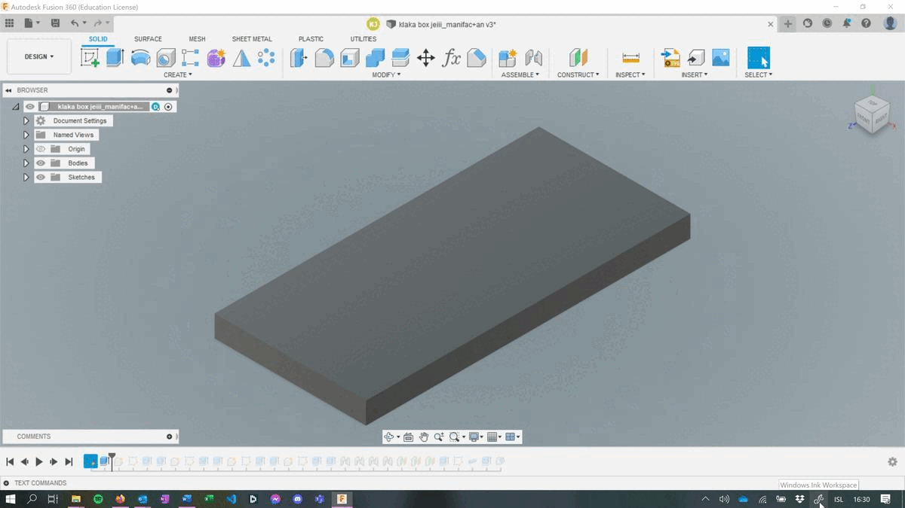
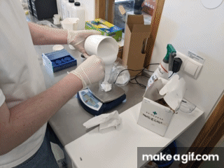

Hópaverkefni
Hér er hópaverkefni eftir Dag, Hákon og Kalla
Hönnunarvernd fyrir verkefnið okkar.
Samkvæmt hugverkastofu er aðeins útlit vöru sem fæst verndað með hönnunarvernd og til þess að hönnun njóti þeirrar verndar þarf hún að vera ný og sérstæð. Hönnuninn okkar er klakabox sem býr til nokkrar týpur af ávaxta laga klökum. Við byggðum hönnunina okkar ekki á neinni annarri hönnun, nema við tókum myndirnar af ávöxtunum af netinu til þess að búa til teikningarnar okkar. Okkur langar hinsvegar að sem flestir geti notið góðs af þessari hönnun og veljum því FAB hönnunarvernd þ.e
"This work may be reproduced, modified, distributed, performed, and displayed for any purpose, but must acknowledge "project name". Copyright is retained and must be preserved. The work is provided as is; no warranty is provided, and users accept all liability."
Við héldum utan um verkefnið á tveimur stöðum, annarsvegar í Excel skjali sem inniheldur skipulag með dagsetningum, áætlaðan tíma, lengd verks og ábyrgðaraðila.
Einnig notuðum við Trello til að hafa yfirsýn um hvað þurfti að gera og hvað er verið að gera hverju sinni.
Með því að nota þessi skipulög náðum við að hafa góða yfirsýn með verkefninu og gátum auðveldlega séð hve mikinn tíma við þyrftum að gefa okkur hverju sinni.
Allir meðlimir hópsins hittust til að ræða hvert lokaverkefnið ætti að vera og hvað ætti þá að hanna. Fyrst var ákveðið að búa til stól með lifandi hjörum en þar sem enginn meðlimur hópsins gat nýtt sér stólinn eftirá var ákveðið að gera frekar eitthvað annað.
Þess í stað var ákveðið að búa til hlut sem yrði fræstur í mót. Meðal hugmyndanna sem upp komu voru klakabox, lykklakippa og hulstur fyrir síma. Ákveðið var að búa til klakabox og varð því að ákveða hvernig form klakanna ættu að vera. Meðal hugmynda voru lönd, fulglar, bókstafir, blóm, merki háskólans, Múmín fígúrur, skip, vínflöskur, Lego kubbar, púsl klakar eða ávaxtaþema. Valið var að hafa ávaxtaþema þar sem ákveðið var að búa til jarðaber, epli, ananas og banana.
Fyrir verkefnið var í boði 15x15x4cm vax kubbur. Ákveðið var að notast við helming efnisins og skera út 15x7cm klakamót. Ákveðið var að dýpt boxins skyldi vera 1.5cm þar sem klakarnir áttu að vera 1cm þykkir sem myndi gefa 0.5cm þykkan botnflöt á mótinu.
Þegar hugmyndavinnunni var lokið byrjuðum við að hanna í Fusion 360. Fyrst gerðum við plötu sem er sama stærð og vaxið eða 15x7cm til að vita hve mikið pláss við höfum fyrir ávextina. Til að einfalda okkur lífið sóttum við svarthvítar myndir af netinu af ávöxtunum og notuðum breyti á netinu til að breyta þeim úr png yfir í svg hér . Síðan tókum við svg myndirnar inn í Fusion 360 með því að nota Insert SVG sem er undir Insert flipanum í hausnum.
Ananas.svg Epli.svg Banani.svg Jarðaber.svgAllir ávextirnir eru sér partur svo hægt sé að færa þá til og skala að vild. Allir ávextirnir eru extrúdaðir í 10 mm hæð frá plötunni og eru því staðsettir 10 mm frá brúninni svo fræsarinn eigi auðvelt með að fræsa neðst við ávextina. Því næst er skorin út rák í mótið svo vatn leki ekki uppúr klakaforminu þegar verið er að búa til klaka. Rákin er staðsett 6 mm frá brúninni og er notast við pipe eiginleikan í Fusion 360 til að skera út rákina. Fyrir pipe eiginleikann var section size stillt á 2,38 mm. Að lokum varð að reisa vegg meðfram brúninni sem er 2 mm þykkur og 15 mm hár. Til þess að auðveldara sé að losa sílikon mótið frá vaxinu verður að bæta við halla á vegginn sem er gert með Draft eiginleikanum sel leyfir val á halla. Fyrir þetta verkefni völdum við að setja 2° halla.
Þegar búið var að hanna klakaboxið var næsta skref að skilgreina leiðirnar sem fræsarinn fræsir eftir. Það fyrsta sem þarf að gera í Fusion 360 er að fara í Manifacturing og velja þar flipann Milling. Næst er búið til Setup fyrir fræsunina þar sem hluturinn er valinn og hnitakerfið stillt svo z-ásinn vísi upp og hnitakerfið er staðsett út í því horni sem fræsirinn á að byrja í..
Þegar búið er að stilla allt í setup má velja Pocket celaring sem er undir 3D flipanum í hausnum á Fusion. Það sem Pocket cleearing gerir er að skafa sem mest af efninu burt á sem skemstum tíma án þess að það hafi áhrif á smáatriðin. Hér er valin bitinn Flat end mill sem er fær um að losa upp mikið af efni í einu. Í töflunni hér að neðan má sjá stillingar og stærðir boranna sem voru notaðir í Pocket clearing. Í stillingunum var öll geometrían valin.
Því næst er farið í Passes þar sem mikilvægt er að afhaka við Stock to leave sem leyfir bitanum að fjarlægja meira efni en hann hefði áður gert. Þetta getum við leyft okkur að gera þar sem hluturinn er með mikið af beinum veggjum og flötum yfirborðum. Þetta leiðir til þess að við þurfum ekki að fletja út öll yfirborð með öðrum bor seinna sem styttir heildar ferlið.
Seinasta stillingin sem þarf að breyta er undir Linking þar sem valið er Ramping angle 10° sem eykur hraðann og styttir því tímann sem það tekur að fræsa út hlutinn.
Lokaniðurstaða fræsunarinnar var svo þessi.
Til þess að fræsa út smáatriðin í ávöxtunum er farið í 3d flipann og valið Flat. Þar næst þarf að stilla bitana eftir gildunum í töflunni hér að neðan. Í stillingunum fyrir bita leiðina er farið fyrst í geómetríuna þar sem einungis ávextirnir eru valdir. Þetta er gert þar sem bitinn sem verið er að nota er 0,4mm í þvermál og tekur því langan tíma að fræsa með honum. Þar sem ekki var til Flat end mill 0,4 mm biti notuðum við Ball end mill 0,4 mm bita til þess að skera út smáatriðin.
Hér þarf ekki að breyta jafn miklu og fyrir hina bitana en í Linking þarf að stilla Ramping Angle í 10°.
Til þess að setja rákina neðst í mótið var ákveðið að nota ball end bita sem myndi dragast eftir botninum og skera þannig út rákina. Í Fusion var notast við slot eiginleikann í 2D flipanum sem bjó til leið fyrir fræsinn með því að velja sitthvora brún rákarinnar.
Að lokum þarf einungis að passa að nota réttu bitana fyrir hvern skurð og má sjá útkomu verkefnisins hér að neðan.
| Breytur: | Pocket Clearing | Flat | Slot |
|---|---|---|---|
| Týpa af bor | Flat end mill | Ball end mill | Ball end mill |
| Þvermál | 3,175 mm | 0,4 mm | 2,38 mm |
| number of flutes | 4 | 2 | 2 |
| Spindle speed | 5000 rpm | 10000 rpm | 7000 rpm |
| Ramp spindle speed | 5000 rpm | 10000 rpm | 7000 rpm |
| Cutting feedrate | 460 mm/min | 460 mm/min | 460 mm/min |
| Ramp feedrate | 460 mm/min | 460 mm/min | 460 mm/min |
Skorið var út með Roland MonoFab SRM-20 CNC fræsi.
Þegar búið var að ákvarða alla bitana og toolpaths í fusion360 voru skrárnar vistaðar sem .nc skrár og færðar yfir í vpanel for srm-20 forritið sem stýrir fræsinum.
Fræsingin tók 3 tíma í heildina og var hún gerð í þrem skrefum.

Smáatriðin tókust illa og varð að skrapa umfram vax úr raufunum að öllu loknu. Líklegast hefðu smáatriðin tekist betur ef önnur umferð hefði verið farin yfir smáatriðin til þess að fjarlægja það vax sem sat eftir eða nota Flat end mill sem myndi lyfta vaxinu betur upp og losa það frá en sá biti var ekki til.
Þar sem kubburinn var skakkur og tækið notaði part af kubbnum til að núllstilla sig fræsti hann umfram vaxið sem varð til þess að ein hliðin var skorin burt en það vildi þó til að allt sem við höfðum teiknað var enn innan vaxins. Þetta var þó lán í óláni þar sem þetta gerði það auðveldara að fjarlægja sílikon mótið þegar búið var að steypa það.
Fyrir verkefnið var í boði 15x15x4cm vax kubbur. Ákveðið var að notast við helming efnisins og skera út 15x7cm klakamót. Ákveðið var að dýpt boxins skyldi vera 1.5cm þar sem klakarnir áttu að vera 1cm þykkir sem myndi gefa 0.5cm þykkan botnflöt á mótinu.
Til þess að steypa klakaboxið varð fyrst að finna viðeinangi sílikon. Við notuðum glært sílíkon til mótagerðar af gerðinni ZC30.
Byrjað var á því að hella sílíkoninu í glas og síðan var bindiefni af gerðinni ZC 120 bætt við. Hlutföllin á milli bindiefnis og sílíkons var 5:100. Vigtað var magn sílíkons og síðan reiknað út magn bindiefnisins sem varð að koma á móti. Eftir að efnin tvö voru kominn í glas var þeim hrært vel saman í um 10 mínútur. Næsta skref var að hella sílíkoninu í mótið og sjá til þess að það fór í hvern krók og kima. Loka skrefið var svo að pota tannstöngli í sílíkonið þegar það var komið í mótið til þess að losa um loftbólurnar sem gætu enn leynst í því og losa þær burt. Hér fyrir neðan má sjá ferlið í myndum.
Mótið var hannað sem „one part negative mold“ þar sem klakarnir yrðu skornir út úr vaxinu og sílikoni síðan hellt yfir. Lokaafurðin yrði því sílikon mót af klakaboxinu.
Þegar búið var að hella sílikoninu var því leyft að sitja í 72 klst til þess að harðna.
Þá er Sílikon mótið fjarlægt úr vaxinu.
Þegar klakaboxið er tilbúið er það fyllt af vatni og látið sitja í frysti. Klakarnir komu mun betur út en við þorðum að vona.


{kind=link}
{kind=link}
{kind=link}
{kind=link}